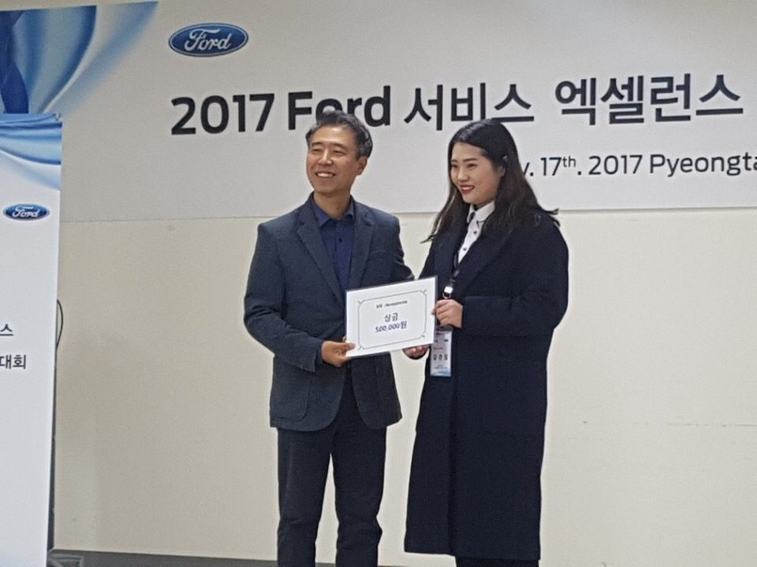

"'왜 예약 고객이 오지 않을까'에서 시작된 프로세스 관점"

서비스센터 예약을 걸어놓고 실제로 입고하지 않는 고객 비율이 높았습니다. 그 자리에 앉아있던 사람이 처음 던진 질문은 "이 고객이 왜 안 왔을까"였습니다. 개인 응대의 문제가 아니라 프로세스의 문제라고 판단했습니다.
본사 · 서비스 어드바이저 · 리셉션의 시각이 아니라, "예약한 고객이 방문 사이에 겪는 일"을 시간 순으로 따라가 보았습니다. 사이가 비어 있는 지점을 찾은 후, 그 지점을 프로세스로 채웠습니다.
그때는 "관찰"이라고 명명하지도 않았습니다. 지금 되짚어보니, 지금 하는 모든 일의 기본 뼈대가 여기서 만들어졌습니다.
실무적으로도 결과가 있었지만, 지금 돌아보면 가장 큰 성과는 관점의 획득이었습니다.
제 커리어의 원점입니다.
"고객이 어디서 헤매는가"를 관찰하는 습관, 프로세스로 문제를 푸는 관점이 여기서 시작되었습니다. 이후 55개 매장의 매뉴얼을 만들 때도, ThinkWise SaaS 사용자를 관찰할 때도, AI EduMentor에서 학습자 이탈을 정의할 때도, 늘 같은 자리에서 같은 질문을 되풀이하고 있습니다. "이 사람은 지금 어디서 막히고 있는가."